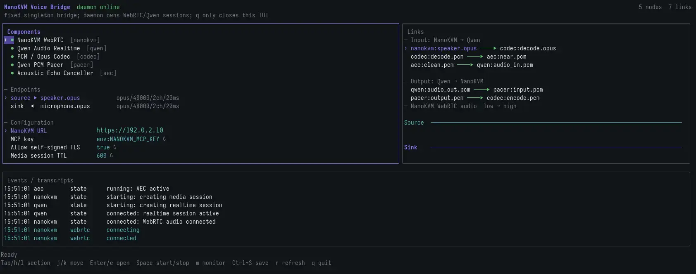

中文
中文NanoKVM Go 实时语音二次开发
更新历史
| 日期 | 版本 | 作者 | 更新内容 |
|---|---|---|---|
| 2026-08-03 | v1.2 | Liang Ziyue |
|
| 2026-07-30 | v1.1 | taonyx |
|
实时语音二次开发
Voice Bridge 技术简介
Voice Bridge 是连接 NanoKVM Go 音频媒体接口与实时语音模型的桥接程序。它接收被控主机或手机通话进入 NanoKVM Go 的音频，完成声道转换和重采样后发送给模型；模型返回的流式音频经过缓冲后，再通过 NanoKVM Go 的 WebRTC 音频轨道写入被控主机的 UAC2 虚拟麦克风。
本文是实时语音对话快速体验的进阶篇，面向需要理解底层原理或进行二次开发的用户。建议先按快速体验篇安装并跑通官方 APP，再阅读本文。这样可以先确认硬件、账号和基础音频链路正常，再将问题限定在自己修改的部分。
官方设备端 APP 是一个前台 Python APP：它通过设备本机 https://127.0.0.1/api/mcp 创建短期媒体会话，用 aiortc 建立 WebRTC 音频轨道，用 PyAV 做 PCM 重采样，并通过 WebSocket 连接 Qwen Audio Realtime。退出 APP 时会关闭 Qwen WebSocket、WebRTC PeerConnection 和 MCP media session，不会在后台继续桥接音频。
本文先解释官方 APP 已经实现的最小链路，再说明替换模型、外部 Bridge、AEC、调试探针等进阶改造。文中的 URL、事件名和媒体参数用于解释实现思路。NanoKVM MCP tools、媒体会话参数和 signaling 协议必须以设备实际返回的接口说明为准；模型事件和音频格式必须以模型官方文档及服务端实际返回为准。
建议阅读路径
如果只是想理解官方 APP 如何工作，先阅读到“建立模型会话”即可；这部分解释了配置、MCP、WebRTC 和 Qwen 音频格式。
如果要替换 Qwen 或修改模型参数，继续阅读“实时缓冲、发送节拍与打断”和“生命周期与可靠性”。
如果要做外部 Bridge、AEC、录音分析或让 AI 辅助开发，再阅读后面的验收、排查和提示词章节。
可以进行哪些二次开发
理解 Voice Bridge 的数据流后，可以在官方示例基础上实现：
- 替换 Qwen，接入其他提供流式音频输入和输出的实时语音模型；
- 修改模型的 instructions、音色、语言和轮次检测策略；
- 接入知识库、Agent 或业务工具，构建电话客服和语音助手；
- 增加 AEC、降噪、录音、监控和自定义音频处理；
- 将设备端 APP 改造成运行在 PC 或服务器上的长期服务；
- 为模型断线、媒体会话过期和网络抖动增加恢复机制。
整体架构
Voice Bridge 包含控制面、媒体面和模型连接三部分：
Bridge
|
+-- 控制面: MCP
| Bridge -> NanoKVM Go
| 创建/关闭媒体会话
|
+-- 媒体面: WebRTC / Opus
| Bridge <-> NanoKVM Go <-> 被控主机音频设备
|
+-- 模型连接: WebSocket / PCM
Bridge <-> 实时语音模型
| 部分 | 作用 | 不负责的内容 |
|---|---|---|
| MCP 控制面 | 认证，创建和关闭媒体会话，返回短期 token 与信令地址 | 不传输连续音频 |
| WebRTC 媒体面 | 与 NanoKVM Go 交换低延迟 Opus 音轨 | 不理解模型事件 |
| 音频处理层 | PCM 格式转换、缓冲和发送节拍；在官方 Python APP 中，WebRTC Opus 编码和 RTP 发送由 aiortc 负责 |
不处理设备认证 |
| 模型适配层 | 建立模型会话，发送 PCM，接收语音和 transcript | 不直接操作 UAC2 设备 |
双向音频的数据流如下：
上行：被控主机/手机 → NanoKVM Go speakerReceive → Bridge → 实时语音模型
下行：实时语音模型 → Bridge → NanoKVM Go micSend → 被控主机虚拟麦克风
选择运行方式
Bridge 可以运行在 NanoKVM Go 内，也可以运行在外部 PC 或服务器上。两种方式是替代关系，部署时通常选择其中一种。
| 方式 | 适用场景 | 实现重点 |
|---|---|---|
| 设备端 Python APP | 快速部署、设备独立运行、直接通过 App Server 管理 | App SDK 版本、ARM Python 依赖、存储与内存占用 |
| 外部 Bridge | 长期服务、复杂 AEC、音频监听和集中运维 | 服务管理、网络可达性、外部主机音频工具链、手动 Opus/RTP 处理 |
官方设备端 APP 使用 aiortc、PyAV 和模型 WebSocket，适合先跑通最小可用链路。外部 Bridge 可以使用 Go、libopus、libspeexdsp 和 PipeWire，适合需要长期运行、复杂 AEC 或更多音频探针的场景。下面是外部 Bridge 的 TUI 示例，可用于显示组件状态、音频连接、事件和 transcript：

后文的 MCP、WebRTC 和音频转换原理适用于两种方式，但进程生命周期和依赖管理需要分别实现。不能使用设备端 APP 的重连逻辑推断外部 Bridge 的生命周期；模型重连能否继续复用 NanoKVM media session，也需要结合媒体会话 TTL 和设备实现确认。
开发前准备
开始修改前，请准备：
- 已按快速体验跑通官方设备端 APP；
- 已启用
Settings > Device > Virtual Audio和Settings > AI > MCP Service； - 设备已使用支持
app.json和无参数@app()的新版 NanoKVM Go App SDK； - NanoKVM Go 的完整访问地址和 MCP API key；
- 目标模型的 API key、服务地址、模型名称、地域或 Workspace 信息；
- 目标模型当前版本的官方实时音频 API 文档；
- 与目标运行方式匹配的 Go 或 Python 开发和测试环境；
- 可以在被控主机上录制 NanoKVM Go 虚拟麦克风的工具。
真实密钥只应通过环境变量或 APP environment 配置提供，不要写入源码、日志、截图或提交记录。
获取示例源码
可运行的设备端实现位于 NanoKVM-Go-Apps main 分支的 voice-bridge/。其中包含 APP 入口、配置清单和安装脚本；共享 appbase SDK 与开发文档位于 base 分支。
建议先复制 voice-bridge/ 作为自己的 APP，再逐层替换模型适配或音频处理代码。APP 的 environment 配置由 app.json 的 env 字段声明，并在网页安装或编辑配置时生成表单；安装生命周期脚本会安装 apt 编译依赖，并把固定版本的 Python 依赖安装到 APP 私有 python/ 目录，不需要用户通过 SSH 手动执行 apt 或 pip。
生命周期脚本应固定依赖版本、使用非交互模式、支持幂等执行，并为下载和构建设置超时与重试。网页会实时显示脚本的 stdout/stderr，并允许复制安装日志。脚本以 root 权限运行，因此只能使用可信的 App Server 和源码；脚本不得输出 API key 或 media-session token，也不应在失败后遗留后台子进程。
修改、配置与部署示例
如果继续使用设备端 APP 方式，可以按以下流程开发和部署：
- 复制官方
voice-bridge/目录，并修改 APP ID、名称和版本； - 修改模型适配、音频处理或界面代码；
- 在
app.json的env字段中声明运行所需的地址、密钥和模型参数； - 更新安装生命周期脚本，并在干净环境中验证重复执行不会出错；
- 将 APP 打包为只包含一个顶层 APP 目录的 ZIP；
- 在 NanoKVM Go 网页进入
Settings > Apps > Installed，上传 ZIP； - 在自动生成的 environment 表单中填写配置，等待安装日志显示成功；
- 在设备触摸屏的
Apps页面启动 APP，完成实际通话测试。
APP 目录格式、ZIP 安装和退出手势可参考扩展：自定义 APP。开发期间修改 environment 后，需要重新启动 APP 才会生效。
如果选择外部 Bridge，则不需要打包 NanoKVM Go APP。应在 PC 或服务器上构建程序，通过环境变量或受保护的配置文件提供连接信息，再使用该平台的服务管理工具控制启动、重启和日志轮转。外部主机必须能够访问 NanoKVM Go 和实时语音模型。
推荐开发顺序
不要一开始就把设备、模型和全部音频处理连接在一起。按以下顺序逐层验证，可以更快定位故障：
- 读取 NanoKVM MCP 自描述，确认媒体 tools、参数、返回字段和清理方式；
- 只接收
speakerReceive，验证音频方向、采样率、声道和连续性； - 使用已知正确的 PCM 测试
micSend，并在被控主机录音； - 脱离 NanoKVM，单独验证模型 session、transcript、流式输出和打断；
- 接通 NanoKVM 到模型的上行链路，确认 User transcript；
- 接通模型到 NanoKVM 的下行链路，确认被控主机最终录音；
- 最后加入 barge-in、AEC、分层重连、日志和指标。
后文将按控制面、媒体格式、模型会话和实时控制的顺序解释各层原理。
建立 NanoKVM 媒体会话
官方设备端 APP 面向当前 NanoKVM Go App SDK，直接使用已知的 media_session_create 和 media_session_close。如果你要做通用外部 Bridge、适配不同固件版本，或者准备把这部分做成长期维护的工具，则应先初始化 MCP，并调用 tools/list；如果设备支持 resources，再读取 resources/list。从设备的实际自描述中确认媒体 tool 的准确名称、参数、返回字段、token 有效期和清理方式。可选能力不存在时应正常降级，不能因为没有 resources 直接退出。
MCP 只做控制面。认证后通常调用 media_session_create，申请 speakerReceive 和 micSend，获得短期 token 与信令地址。地址通常类似：
/api/media/audio/webrtc?media_session=<token>
官方设备端 APP 运行在 NanoKVM Go 本机，因此 signaling 地址使用 wss://127.0.0.1 加上 MCP 返回的 signalingPath。APP 端创建 WebRTC offer，NanoKVM 返回 answer 和 candidate，最终由 WebRTC 音轨承载连续音频。外部 Bridge 需要根据 NanoKVM 访问地址构造 ws/wss URL，并确认实际 signaling 顺序，不能直接套用其他 WebRTC 服务的流程。
典型参数如下，实际字段以 MCP 返回的 tool schema 为准：
{
"speakerReceive": true,
"micSend": true,
"ttlSeconds": 600
}
连接顺序：
- 初始化 MCP 会话；
- 调用
media_session_create； - 使用短期 token 连接 signaling WebSocket；
- 创建 PeerConnection，交换 SDP 和 ICE；
- PeerConnection 进入 connected 状态后启动音频转换和模型会话；
- 退出时关闭模型 WebSocket、PeerConnection、signaling WebSocket 和 media session。
MCP API key 与 media-session token 是两种凭据，二者都不应进入日志。
处理音频格式
NanoKVM WebRTC 与 Qwen Realtime 使用不同格式，不能直接转发字节：
| 端点 | 格式 |
|---|---|
| NanoKVM WebRTC 音轨 | WebRTC 音频；官方 Python APP 中由 aiortc 处理 Opus/RTP |
| NanoKVM 进入 APP 的 PCM | 由 aiortc / PyAV 交给应用的 AudioFrame，再重采样为 S16LE、16 kHz、单声道 |
| Qwen 输入 PCM | S16LE、16 kHz、单声道 |
| Qwen 输出 PCM | S16LE、24 kHz、单声道 |
完整数据流：
NanoKVM speaker WebRTC audio
→ aiortc / PyAV AudioFrame
→ downmix + resample → PCM 16k mono → Qwen
Qwen PCM 24k mono
→ 有界缓冲 → 20 ms AudioFrame → aiortc audio track
→ NanoKVM microphone WebRTC track
常用分片大小（S16LE 每采样点 2 字节）：
| 数据 | 时长 | 每声道采样点 | 字节数 |
|---|---|---|---|
| Qwen 输入 PCM，16 kHz mono | 100 ms | 1600 | 3200 |
| Qwen 输出 PCM，24 kHz mono | 20 ms | 480 | 960 |
| NanoKVM PCM，48 kHz stereo | 20 ms | 960 | 3840 |
Qwen WebSocket 不保证按 20 ms 返回 delta；网络分片必须先进入缓冲，再切成固定帧。官方 Python APP 将 Qwen 输出缓存在队列中，AudioStreamTrack.recv() 每次取 20 ms 的 24 kHz mono PCM，队列为空时补静音，队列满时丢弃旧块，随后由 aiortc 负责 WebRTC 编码和 RTP 发送。替换其他模型时，必须重新确认输入输出采样率、声道、采样格式和分片规则，不能直接沿用 Qwen 的参数。
建立模型会话
建立 WebSocket 连接时，通过 URL 中的 ?model=<model> 查询参数选择模型。官方 APP 按以下格式构造连接地址：
wss://<workspace>.<region>.maas.aliyuncs.com/api-ws/v1/realtime?model=<model>
连接返回 session.created 后、发送第一段音频前，用 session.update 配置音色、输入输出格式、instructions 和交互模式，不要在 session.update 中发送 model 字段。常用交互模式为 server_vad 和 smart_turn。
典型事件流：
client Qwen Realtime
│── WebSocket connect ───────────→│ ?model=<model>
│←─ session.created ──────────────│
│── session.update ──────────────→│
│── input_audio_buffer.append ───→│ 16 kHz mono S16LE
│←─ input_audio_buffer.speech_started
│←─ conversation.item.input_audio_transcription.completed
│←─ response.audio.delta ─────────│ 24 kHz mono S16LE
│←─ response.audio_transcript.* ──│
│←─ response.done ────────────────│
WebSocket JSON 中的 PCM 使用 Base64 编解码；上行可累计 100 ms / 3200 字节再发送；下行 delta 到达后立即进入播放缓冲，不要等 response.done 再整段播放。客户端应忽略并低频记录未知事件，不能因为服务端增加事件类型而退出。
替换其他实时语音模型时，可以保留 NanoKVM 的 MCP、WebRTC 和音频媒体层，只替换模型适配层。新的适配层需要重新实现鉴权、会话初始化、音频增量、transcript、结束、错误和取消事件，再按所选 WebRTC 发送路径要求的格式提供固定时长 PCM 帧。官方 Python APP 应向 aiortc 提供 AudioFrame；对于当前 Qwen 输出，仍使用 24 kHz / mono / 20 ms 音频帧，由 aiortc 负责重采样和 Opus/RTP 编码。只有低层外部 Bridge 才需要把模型输出转换为 NanoKVM 协商得到的 WebRTC 格式，并自行处理 Opus/RTP。
实时缓冲、发送节拍与打断
response.audio.delta 按网络节奏突发到达，而 WebRTC 和 UAC 麦克风需要连续输入。模型输出应写入有界队列，再按 20 ms 的实时节奏取固定长度发送。官方 Python APP 通过 AudioStreamTrack.recv() 提供 20 ms PCM 帧，由 aiortc 驱动发送节拍；外部低层实现则通常需要自己实现 Pacer。队列满时丢弃过期音频，队列空时补静音或等待；不能把 delta 突发直灌 WebRTC。
调度落后时不能连续突发发送来“追赶”时钟，应丢弃已经过期的帧并从当前时间恢复。每次启动、停止或模型会话轮换时都应清空缓冲，避免历史音频被重新播放。
收到 input_audio_buffer.speech_started 时执行 barge-in：停止当前回复、发送 response.cancel、清空待播放 PCM，再处理新一轮语音。官方 APP 已实现基础清空和取消逻辑；如果外部 Bridge 自己维护 Opus/RTP 队列，或加入更复杂的调试监听，应进一步使用 generation 或 epoch 标记让旧回复帧失效，并在清空缓冲与发送协程之间建立串行屏障，避免在途旧帧继续播放。
处理回声
如果模型回复经被控主机扬声器回灌进 speakerReceive，会形成回声环。当前官方设备端 APP 没有应用层 AEC；快速体验时应尽量避免被控主机扬声器外放回灌，或改用带 AEC 的外部 Bridge。AEC 需要两路时间同步的信号：capture 取送给模型前的输入，reference 取 Pacer 之后实际发出的播放流，不能使用尚未按时间输出的原始网络 delta。VAD 不能代替 AEC。
生命周期与可靠性
模型 WebSocket、NanoKVM MCP media session 和 WebRTC 应分层管理。模型连接中断时，优先只重建模型层；媒体 token 或 TTL 到期时，再按照设备 MCP 的接口说明续期或重建媒体层。
重连应使用带随机抖动且有上限的指数退避。模型 session 轮换可能丢失云端上下文；需要连续上下文时，由应用保存摘要并在新 session 中重新注入。所有 close 操作都应设置超时，正常退出时应关闭模型连接、PeerConnection、signaling WebSocket 和 media session，并终止调试监听进程。
普通模式只按秒聚合连接状态、PCM 字节数、编解码帧数、队列深度、Pacer late frames 和 barge-in 次数，不要逐帧刷日志。日志中不得出现 API key、media-session token 或完整音频数据。
验收与排查
完成开发后，按与开发相同的分层顺序验收：
- 只收：建立 MCP 与 WebRTC，确认
speakerReceive的方向、语速和声道； - 只发：用已知正确的 PCM 验证
micSend，让被控主机录音； - 只接模型：单独验证 session、transcript、流式输出和打断；
- 桥接上行：解码、降采样后送 Qwen，确认 User transcript；
- 桥接下行：缓冲、20 ms 取帧、重采样或 WebRTC 发送后送回 NanoKVM；
- 加入 barge-in、AEC 和重连后，重复完整通话测试；
- 退出程序，确认模型、WebRTC、media session 和子进程均已清理。
验收至少覆盖 MCP、WebRTC、模型输入、模型输出、被控主机最终录音和退出清理。不能因为模型 PCM 或本地 Opus 监听正常，就判断最终链路正常；被控主机的实际录音才是下行链路的最终依据。
如果本地 Opus 正常而被控主机仍有爆音或吞音，应按时间对齐采集编码前 PCM、发送 Opus、NanoKVM Server 接收音频、UAC 写入前音频和被控主机最终录音，从中定位发生格式或节拍错误的层级。
使用 AI 完成接入
理解上述接口和数据流后，可以让具备代码编辑、终端和 MCP 访问能力的 AI 在官方示例上完成实现。推荐流程如下：
- 准备 NanoKVM 地址、MCP key、模型凭据、模型官方文档和目标运行方式；
- 让 AI 先读取 MCP 的 tools/resources 和现有源码，再给出分层计划；
- 按“推荐开发顺序”依次验证只收、只发、模型、上行和下行；
- 基础链路通过后，再实现打断、AEC、重连、服务管理和日志；
- 按“验收与排查”完成被控主机录音和退出清理验证。
AI 生成的代码同样必须以设备 MCP 返回值和模型官方文档为准，不能直接照抄本文中的典型 URL、事件名或参数。
准备 Qwen API 文档
开始开发前，请先打开 Qwen Audio Realtime API 使用指南，根据实际账号和地域确认当前可用的模型与接口版本。不要只把模型名称交给 AI，也不要让 AI 凭记忆猜测接口。
建议从官方文档中确认并一并提供给 AI：
- 模型名称、地域/工作空间和服务端点；
- API key、workspace ID 的获取方式及鉴权要求（真实密钥只通过环境变量提供）；
- WebSocket 建连地址、请求头和会话初始化格式；
session.update支持的字段、voice、输入/输出音频格式和server_vad/smart_turn能力；input_audio_buffer.append、response.audio.delta、transcript、response.cancel、response.done等事件的实际 JSON schema；- 当前模型的音频采样率、声道、PCM 编码、Base64 规则、限流和空闲超时。
将官方文档 URL 或保存的文档内容、选定模型/地域和 NanoKVM MCP 自描述信息一起交给 AI。若文档与本文示例不一致，以官方文档和服务端实际返回为准。
下面的提示词已经包含本项目实际遇到的主要问题，适合交给具备代码编辑、终端和 MCP 访问能力的 AI。它的目标比当前官方设备端 APP 更完整，包含外部 Bridge、AEC、调试探针等高级能力；如果只是在官方 Python APP 上替换模型，可以删掉不需要的外部 Bridge、AEC 和低层 Opus/RTP 要求。建议同时把 main/voice-bridge 源码、base 分支的 SDK 文档、设备 MCP 返回信息和上面准备好的 Qwen 文档提供给 AI，让它在现有示例上完成端到端二次开发。使用前替换尖括号内容；密钥通过环境变量提供，不要直接粘贴到提示词或提交到仓库。
你是一名熟悉 MCP、WebRTC、RTP、Opus、USB Audio、实时音频和异步并发的
资深工程师。请在当前仓库中完成实现和实际验证，不要只给示例代码或设计方案。
## 目标
通过 NanoKVM Go 的 MCP 创建双向音频媒体会话：
1. 接收被控机扬声器/手机通话的声音，发送给实时语音模型；
2. 流式接收模型生成的 PCM，通过 WebRTC 音频轨道送入被控机的 UAC2 虚拟麦克风；
3. 支持实时 transcript、用户打断、AEC、断线恢复和低开销调试探针。
连接与文档：
- NanoKVM URL：<NANOKVM_URL，必须是完整 http:// 或 https:// URL>
- MCP URL：<通常为 NANOKVM_URL/api/mcp>
- MCP key：只从环境变量 NANOKVM_MCP_KEY 读取
- 模型 API key/workspace ID：只从环境变量读取
- 模型官方文档：<REALTIME_AUDIO_API_DOCUMENT_URL；Qwen 或其他模型均填写对应官方文档>
- 目标语言和运行位置：<Go/外部主机，或 Python/NanoKVM Go 设备端>
## 前置检查
1. 提醒用户在网页 Settings > Device > Virtual Audio 打开虚拟音频。
手机通话媒体暂时不能走 DP 音频，只能通过 USB 音频进入 NanoKVM Go。
2. 确认 MCP Service 已打开：网页 Settings > AI > MCP Service，或设备触摸屏第二页。
3. 检查 URL 必须包含 ://，禁止把 https://<host> 错误拼成 https:<host>。
4. 检查仓库状态和现有实现，保留用户已有修改，不改无关文件。
5. 先给出简短分层计划，再开始编码；能从代码、MCP 或文档确认的信息不要猜测。
## 先读取 MCP 自描述
1. 完成 MCP initialize，保存并在后续请求携带 Mcp-Session-Id（若服务端要求）。
2. 调用 tools/list，以及服务端支持时的 resources/list，读取媒体相关 resource/tool schema；
MCP 的可选能力不存在时应正常降级，不能直接退出。
3. 确认 media_session_create、media_session_close 的准确名称、参数、返回字段、
token 有效期、signalingPath、认证头、错误语义和清理方式。
4. 以设备实际返回的接口为准。MCP 是控制面，不通过 MCP tool、resource 或
DataChannel 传输连续音频。
5. MCP API key 与短期 media token 是不同凭据，二者都不能写入日志。
## NanoKVM WebRTC 接口要点
- 创建 speakerReceive=true、micSend=true 的媒体会话。
- speakerReceive：NanoKVM -> client，是被控机扬声器/手机通话音频。
- micSend：client -> NanoKVM，是写给被控机 UAC2 虚拟麦克风的音频。
- 用 NanoKVM host + signalingPath 构造 ws/wss URL，通过短期 token 鉴权。
- 处理 offer、answer、ICE candidate 和 PeerConnection 状态；确认谁创建 offer，
不要套用其他 WebRTC 服务的信令顺序。
- 协商并验证 Opus/48000/2ch，20 ms 一帧，每声道 960 samples，fmtp 建议
minptime=10;useinbandfec=1。
- 明确所用 WebRTC 库要求的是 PCM frame、Opus sample，还是 RTP packet；
不得把一种对象误当成另一种。发送时 duration/timestamp 必须与 20 ms 一致，
RTP 时钟每帧前进 960。
- 优先对照 NanoKVM Go 官方网页麦克风实现的协商、track 和发送节拍。
## 音频管线
上行：NanoKVM speaker Opus 48k stereo -> decode -> PCM S16LE 48k stereo
-> downmix/resample -> 模型输入 PCM。
下行：模型输出 PCM -> Base64 decode -> 有界队列 -> 20 ms 音频帧
-> NanoKVM microphone track。使用 Python aiortc 时提供 AudioFrame 并让 aiortc
负责 WebRTC Opus/RTP；使用低层外部 Bridge 时再自行重采样、编码 Opus 和维护 RTP 节拍。
如果模型是 Qwen Audio Realtime：
- 建立 WebSocket 连接时，在 URL 中通过 `?model=<model>` 查询参数选择模型，
不要在 `session.update` 中包含 `model` 字段；
- 等待 session.created，再发送 session.update；必须在第一段音频前完成 voice、
instructions、输入输出格式和 interact_type 配置，并确认服务端接受更新；
- 输入 PCM 为 S16LE/16000/mono，建议每 100 ms 发送 3200 字节；
- 输出 PCM 为 S16LE/24000/mono；
- PCM 在 WebSocket JSON 中按 API 文档进行 Base64 编解码；
- interact_type 支持 server_vad 和 smart_turn，并通过环境变量配置；
- response.audio.delta 到达后立即入队，不能等 response.done 后整段播放；
- 处理完整 User/Qwen transcript、response.done（包括 status=cancelled）和 error；
忽略并低频记录未知事件，不能因服务端增加事件类型而退出。
## 替换为其他实时语音模型
NanoKVM 的媒体层只负责 WebRTC、Opus 和 UAC2 音频，不依赖 Qwen。只要其他模型提供流式音频输入和输出，就可以保留 NanoKVM 的媒体部分，替换 Bridge 中的模型适配层。
替换时让 AI 重点检查：
1. WebSocket 或 HTTP 流式接口的建连方式、鉴权和会话初始化；
2. 输入/输出采样率、声道、PCM 编码、帧长和 Base64 规则；
3. 音频增量、文本 transcript、结束、错误和取消事件的实际格式；
4. VAD、打断、空闲超时、限流和会话轮换行为；
5. 将模型输出转换为所选 WebRTC 发送路径要求的固定时长 PCM 帧。使用 Python
`aiortc` 时提供 `AudioFrame`，由 `aiortc` 完成重采样和 Opus/RTP 编码；对于当前
Qwen 输出，使用 `24 kHz / mono / 20 ms` 音频帧。只有低层外部 Bridge 才需要
转换为 NanoKVM 协商得到的 WebRTC 格式，并自行处理 Opus/RTP。
不要把 Qwen 的事件名、字段名或 16/24 kHz 音频参数直接套到其他模型；先提供目标模型的官方文档，让 AI 重新完成适配和测试。
## 可选 Agent 能力
如果目标还包括联网查询或调用本地工具，不要默认实时语音模型本身具备 Agent 能力。
先按模型官方文档确认 tool calling 支持；不支持时，把实时语音层作为输入/输出界面，
由独立 Agent/工具编排层消费完整 User transcript，再把最终答复送入 TTS/语音输出。
必须保证同一轮只有一个回复生成者，避免模型原生回复和 Agent TTS 同时播放；用户打断时
同时取消 Agent 任务、TTS 和全部下游音频。联网和本地工具必须遵循最小权限，并在执行
有副作用的操作前取得用户确认。
所有采样率、声道、sample format、frame duration 和字节数都要在端点显式声明并
做测试。不要因为本地监听能听清，就假定 WebRTC/UAC 最终链路正确。
## Pacer 和缓冲
- 网络 delta 不保证 20 ms 到达，禁止收到多少就突发发送多少。
- 使用单调时钟和单一发送协程，每 20 ms 发送固定帧；允许少量 prebuffer。
- 队列必须有最大毫秒数/字节数，溢出时丢弃过期音频，不能无限累积延迟。
- 定义 underrun 策略和短暂 grace；需要补静音时只能按实时节拍补。
- 调度落后时禁止连续突发“追赶”，应丢弃过期帧并恢复到当前时钟。
- 每次服务启动和停止都清空缓冲；调试监听不得把历史数据再次灌入声卡。
## 打断和 AEC
收到 input_audio_buffer.speech_started 时立即：
1. 停止本地/被控机正在播放的模型语音；
2. 优先发送 response.cancel（仅在存在活动回复时）；
3. 清空 Qwen PCM、Pacer、Codec、Opus 发送和调试监听的全部下游缓冲；
4. 使用 generation/epoch 标记使旧回复帧失效；
5. 在 flush 与发送协程之间建立串行屏障，防止已通过检查的在途旧帧逃逸；
6. 立即接收新一轮用户音频。
控制消息优先级必须高于排队的 audio append。server_vad/smart_turn 可能由服务端
自动取消回复，但客户端仍必须立即清空本地输出，不能只等待 response.done。
如存在扬声器回灌则启用 AEC：capture 是送模型前的用户 PCM；reference 必须取
Pacer 实际输出后的模型 PCM。两路需对齐采样率、帧长和时间，VAD 不能代替 AEC。
## 生命周期和容错
- Qwen/模型 WebSocket、NanoKVM MCP media session 和 WebRTC 分层管理。
- Qwen 可能在 180 秒无回复后返回 response_idle_timeout；可在约 120 秒轮换
Qwen session，或错误后重连，但不能因此重建工作正常的 MCP/WebRTC。
- Qwen session 轮换会丢云端上下文；需要上下文时由应用保存摘要并重新注入。
- invalid_request_error 按模型文档判断是否可继续；server_error、连接关闭和网络
错误触发重连。使用带随机抖动、有上限的指数退避（如 1s/2s/4s）。
- media token/TTL 到期要按 MCP 接口说明续期或重建媒体层，不能假定永久有效。
- 所有 close 设置超时。正常退出时关闭模型、PeerConnection、signaling WebSocket
和 media session，并终止 pw-cat/监听进程，不留孤儿进程或残余音频。
## 日志和调试探针
普通模式记录：连接状态、错误分类、重连原因、barge-in、完整且不截断的
“User transcript:”和“Qwen transcript:”。普通日志禁止打印 audio delta 或逐帧状态，
并配置文件大小上限和轮转。
调试模式提供可独立启停、只复制不消费主数据流的观察点：
1. NanoKVM 收到的 speaker Opus；
2. Opus 解码后的用户 PCM / 实际送入模型的 PCM；
3. 模型输出原始 PCM；
4. Pacer 实际输出 PCM；
5. 编码后的 microphone Opus / WebRTC 实际发送计数。
探针按秒聚合 PCM 字节数、Opus 帧数、RMS/peak、队列深度、丢帧、underrun、
overrun 和 Pacer late frames。关闭探针或重启服务时必须清空监听缓存。
## 实现和硬件验收顺序
1. 只接收 speakerReceive，保存音频并确认方向、语速、声道和连续性。
2. 使用已知正确的语音 PCM 和 1 kHz 探针，经 Opus/WebRTC micSend 发送，
让被控机录音验证；不要先接模型。
3. 用本机音频单独验证模型 session、User/Qwen transcript、流式输出和打断。
4. 接通 NanoKVM -> 模型上行，确认 User transcript 稳定完整。
5. 接通模型 -> Pacer -> NanoKVM 下行，以被控机最终录音和语音识别结果验收。
6. 若本地 Opus 正常而被控机爆裂，同时采集并按时间对齐：编码前 PCM、发送 Opus、
NanoKVM Server 收到的 WebRTC 音频、写 UAC 前音频、被控机最终录音，定位故障层。
7. 最后加入 AEC、自动重连、服务管理、TUI/PipeWire 监听和性能优化。
必须测试：格式转换、帧字节数、Pacer 节拍与落后恢复、有界缓冲、barge-in epoch/
flush 屏障、Qwen-only 重连、媒体 TTL、进程退出清理和敏感信息脱敏。
## 交付要求
设备端 Python APP 模式：
- 提供可运行实现、README、`app.json` 和可由 NanoKVM Go 网页安装的单 APP ZIP；
依赖打包在 APP 自身目录，配置声明在 `app.json` 的 `env` 字段中，由
`Settings > Apps` 生成 environment 表单；
- 不要要求用户使用 SSH、SCP、设备端 pip、独立 `.env` 或重启 `kvmcomm`；APP 应能被
动态扫描，并由 Launcher 负责启动、停止和注入环境变量。
外部主机 Bridge 模式：
- 提供可运行的外部可执行程序或系统服务，以及所需的依赖和部署文件；
- 说明支持的操作系统与架构，以及安装、配置、启动、停止、重启、日志查看和开机自启方法；
不要求提供 APP ZIP、`app.json`，也不通过 `Settings > Apps` 安装。
两种模式共同要求：
- 配置项至少包含 URL、密钥环境变量、voice、interact_type、TTL、队列/Pacer、
Qwen session 轮换、AEC 和 debug 开关；
- 执行格式检查、单元测试和可完成的真实设备测试；
- 明确报告哪些环节已实测、哪些仅通过单元测试、哪些仍需硬件确认；
- 不提交真实 IP、API key、media token、录音隐私数据或与任务无关的修改。
这段提示词刻意要求 AI 先完成“固定测试音频 → 被控机录音”的隔离测试。语音桥最容易误判的情况，就是模型 PCM 和本地 Opus 监听都正常，但 NanoKVM Server、UAC 写入节拍或被控系统录音仍有爆音、吞音；因此最终验收不能停在本地监听。